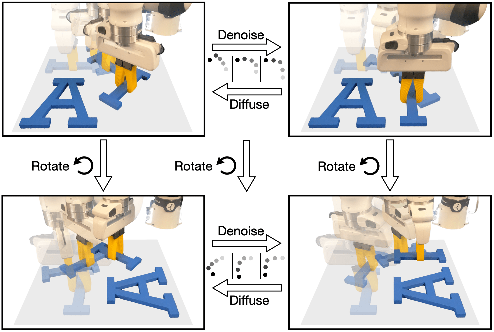
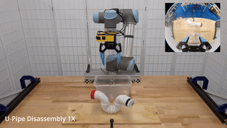
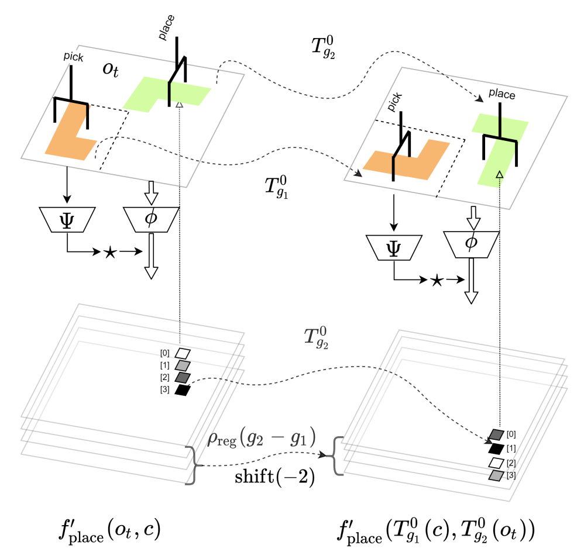
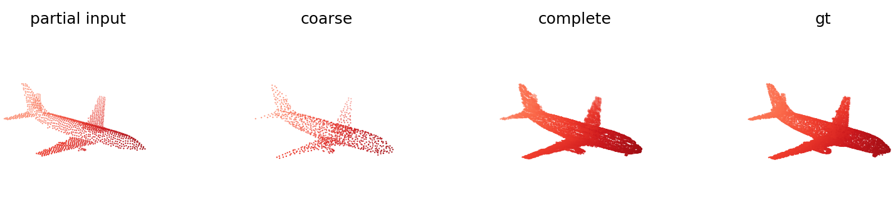

Haojie Huang - 黄浩杰
Make things EASY!!!
I am a PhD student in
Khoury College of Computer Science
at Northeastern University, where I am advised by
Prof. Platt in
The Helping Hands Lab and
Prof. Walters in the
Geometric Learning Lab.
I am super interested in machine learning, reinforcement learning, and their applications in robotics, image processing, point cloud analysis, and related fields.
Stay foolish, stay hungry and stay fresh.
Google Scholar
X(Twitter)
Youtube
Github
LinkedIn
CV/Resume
huang dot haoj at northeastern dot edu
2024
Outstanding Paper Award Finalist at Conference on Robot Learning (CoRL) 2024, Munich, Germany.2022
Best Paper Award Finalist at ICRA 2022 Scaling Robot Learning Workshop, Philadelphia, USA.02/2026
Our work, Generalizable Hierarchical Skill Learning via Object-Centric Representation, has been accepted by RAL 2026.02/2026
Our work, Equivariant Diffusion Policy for Sample-efficient Robotic Manipulation has been accepted by IJRR 2026.09/2025
Our work, 3D Equivariant Visuomotor Policy Learning via Spherical Projection (ISP) has been accepted by NeurIPS 2025 as a Spotlight (3%).08/2025
Our paper, Push-Grasp Policy Learning Using Equivariant Models and Grasp Score Optimization has been accepted by RAL 2025.06/2025
Our paper, Learning Efficient and Robust Language-conditioned Manipulation using Textual-Visual Relevancy and Equivariant Language Mapping (GEM), has been accepted by RAL.01/2025
Our work Match Policy: A Simple Pipeline from Point Cloud Registration to Manipulation Policies is accepted at ICRA 2025, Atlanta, USA.11/2024
Our work Equivariant Diffusion Policy is awarded as an Outstanding Paper Finalist at CoRL 2024, Munich, Germany.11/2024
Happy to attend and talk at Robot Learning Symposium @ TUDA.09/2024
Starting fall-semester internship in Amazon Robotics, BOS12, North Reading, MA.09/2024
Our work IMAGINATION POLICY: Using Generative Point Cloud Models for Learning Manipulation Policies is accepted at CoRL 2024.09/2024
Our work Equivariant Diffusion Policy is accepted at CoRL 2024.09/2024
Our work OrbitGrasp: SE(3)-Equivariant Grasp Learning is accepted at CoRL 2024.09/2024
Our work ThinkGrasp: A Vision-Language System for Strategic Part Grasping in Clutter is accepted at CoRL 2024.01/2024
Our work Fourier Transporter: Bi-Equivariant Robotic Manipulation in 3D is accepted at ICLR 2024.09/2023
Starting fall-semester internship in Boston Dynamics AI Institute.07/2023
Our work Edge Grasp Network is presented at RSS 2023 Workshop on Symmetries in Robot Learning.01/2023
Our work Edge Grasp Network: A Graph-Based SE(3)-invariant Approach to Grasp Detection is accepted at ICRA 2023.05/2022
Spotlight presentation of Equivariant Transporter Network (Best Paper Award Finalists) on Scaling Robot Learning Workshop of ICRA 2022.
Equivariant diffusion policy for sample-efficient robotic manipulation
Dian Wang, Stephen Hart, David Surovik, Tarik Kelestemur, Haojie Huang, Haibo Zhao, Mark Yeatman, Xupeng Zhu, Boce Hu, Mingxi Jia, Jiuguang Wang, Robin Walters, Robert Platt
International Journal of Robotics Research (IJRR) 2026
PDF •
Webpage •
Code

Generalizable Hierarchical Skill Learning via Object-Centric Representation
Haibo Zhao, Yu Qi, Boce Hu, Yizhe Zhu, Ziyan Chen, Xupeng Zhu, Owen Howell, Haojie Huang, Robin Walters, Dian Wang*, Robert Platt*
IEEE Robotics and Automation Letters (RAL) 2026
PDF •
Webpage

3D Equivariant Visuomotor Policy Learning via Spherical Projection
Boce Hu, Dian Wang, David Klee, Heng Tian, Xupeng Zhu, Haojie Huang, Robert Platt†, Robin Walters†
NeurIPS 2025 (Spotlight)
PDF •
Webpage •
Code

Push-Grasp Policy Learning Using Equivariant Models and Grasp Score Optimization
Boce Hu⋆, Heng Tian⋆, Dian Wang, Haojie Huang, Xupeng Zhu, Robin Walters, Robert Platt
IEEE Robotics and Automation Letters (RAL) 2025
PDF •
Webpage

Learning Efficient and Robust Language-conditioned Manipulation using Textual-Visual Relevancy and Equivariant Language Mapping
Mingxi Jia*, Haojie Huang*, Zhewen Zhang, Chenghao Wang, Linfeng Zhao, Dian Wang, Jason Xinyu Liu, Robin Walters, Robert Platt, Stefanie Tellex
IEEE Robotics and Automation Letters (RAL) 2025
PDF •
Webpage •
Code

MATCH POLICY: A Simple Pipeline from Point Cloud Registration to Manipulation Policies
Haojie Huang, Haotian Liu, Dian Wang, Robin Walter*, Robert Platt*
International Conference on Robotics and Automation (ICRA) 2025
PDF •
Webpage

IMAGINATION POLICY: Using Generative Point Cloud Models for Learning Manipulation Policies
Haojie Huang, Karl Schmeckpeper, Dian Wang, Ondrej Biza, Yaoyao Qian, Haotian Liu, Mingxi Jia, Robert Platt, Robin Walters
Conference on Robot Learning (CoRL) 2024
PDF •
Webpage •
Code

OrbitGrasp: SE(3)-Equivariant Grasp Learning
Boce Hu, Xupeng Zhu*, Dian Wang*, Zihao Dong*, Haojie Huang*, Chenghao Wang*, Robin Walters, Robert Platt
Conference on Robot Learning (CoRL) 2024
PDF •
Webpage •
Code

Equivariant Diffusion Policy
Dian Wang, Stephen Hart, David Surovik, Tarik Kelestemur, Haojie Huang, Haibo Zhao, Mark Yeatman, Jiuguang Wang, Robin Walters, Robert Platt
Outstanding Paper Award Finalist - Conference on Robot Learning (CoRL) 2024
PDF •
Webpage •
Code
Fourier Transporter: Bi-Equivariant Robotic Manipulation in 3D
Haojie Huang, Owen Howell, Dian Wang, Xupeng Zhu, Robert Platt, Robin Walters
International Conference on Learning Representations (ICLR) 2024
PDF •
Webpage

Leveraging Symmetries in Pick and Place
Haojie Huang, Dian Wang, Arsh Tangri, Robin Walters, Robert Platt
International Journal of Robotics Research (IJRR), Volume 43, Issue 4, 2024
PDF •
Code

Edge Grasp Network: Graph-Based SE(3)-invariant Approach to Grasp Detection
Haojie Huang, Dian Wang, Xupeng Zhu, Robin Walters, Robert Platt
International Conference on Robotics and Automation (ICRA) 2023
PDF •
Code •
Webpage

Equivariant Transporter Network
Haojie Huang, Dian Wang, Robin Walters, Robert Platt
Robotics: Science and Systems (RSS) 2022
PDF •
Code •
Webpage

Graph Attention Shape Completion Network
Haojie Huang, Ziyi Yang, Robert Platt
2021 International Conference on 3D Vision (3DV 2021)
PDF •
Webpage
Academic Experience
2021-Now
PhD, Computer Science, Northeastern University, Boston, United States2018-21
M.S., Robotics, Northeastern University, Boston, United States2013-17
Bachelor, Mechanical Engineering, Shandong University, Jinan, China09/2024-01/2025
Amazon Robotics, Applied Scientist Intern, North Reading, MA09/2023-01/2024
RAI (Boston Dynamics AI Institute), Research Scientist Intern, Cambridge, MA07/2019-12/2019
Shark Ninjia, R&D Intern (Mobile Robot), Needham, MA2026
Reviewer, ICML 2026.2025
Reviewer, IROS 2025, RAL 2025, ICRA 2025, T-RO 2025, ICLR 2025, RSS 2025.2024
Invited Talk, Next-Gen Robot Learning Symposium at TU Darmstadt; Reviewer, IROS 2024, RAL 2024, ICRA 2024.2023
Program Committee Member, Workshop on Symmetries in Robot Learning at RSS 2023; Reviewer, IROS 2023, RAL 2023, ICRA 2023.Recent Research Statement
The first stage of my PhD study focuses on geometric deep learning for robotic manipulation. I first defined SE(3) symmetries for grasping and bi-equivariant symmetries for pick-and-place. By leveraging geometric symmetries, policies are constrained to follow the underlying physics laws, and this can dramatically improve sample efficiency, generalization ability, and learning efficiency.
The latter stage of my PhD study focuses on action representation. The representation of action defines how robots interact with and learn from the physical world. A geometric action representation reduces the redundancy of data. Humans do not control their hands by commanding “move forward 5 cm” and “rotate along some axis by 10 degrees” to grasp a mug. It is very natural. This observation inspired me to think about how to formulate manipulation policies.
A better action representation or interaction structure is one milestone toward achieving good results for general robot models. Another important aspect is how to encode history information more naturally. Scaling robot models only makes sense when these two aspects are fully explored.
Shared with the World
Research is not something that you are trying to get good results, and then write a good story. There are some beautiful laws in the world that need your exploration and demonstration. Go to find them with patience. Good luck.